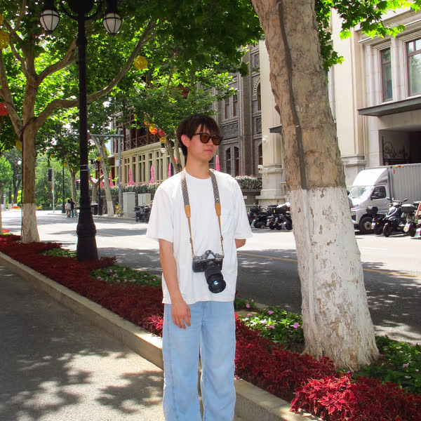

Chenxu Bai白晨旭
Undergraduate · School of EECS, Peking University
Research Intern · Xiaomi MiMo & PKU-Yuan Lab
About
I'm Chenxu Bai (白晨旭), an undergraduate student majoring in Computer Science at the School of Electronics Engineering and Computer Science, Peking University.
My background lies in the intersection of computer vision and computational photography. More recently, I have been exploring multimodal foundation models.
I am currently a research intern at the Xiaomi MiMo team, where I am working on multimodal models, especially unified models for multimodal understanding and generation. I am also a research intern at PKU-Yuan Lab.
For more details, please check out my CV.
News
- 2026.08 UniWorld-Design technical report is released.
- 2026.06 Started as a research intern at the Xiaomi MiMo team.
- 2026.02 AE2VID is accepted to CVPR 2026.
Education
Experience
Worked on scientific computing and open-source software development for ABACUS, focusing on Python bindings, code refactoring, and research-oriented engineering.
Conducted research on event-based imaging and computational photography, with a focus on event-based video reconstruction and all-in-one image restoration.
- AE2VID: co-first-author paper accepted to CVPR 2026.
- EvAIR: third-author paper under review.
Publications

Contact
Feel free to reach out — I'm happy to chat about research, collaborations, or anything in between.
- Email chenxu.bai@stu.pku.edu.cn
- GitHub @a1henu
- Scholar Chenxu Bai